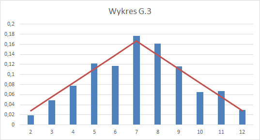

<h1>Odpowiedzi do laboratorium #1</h1> <br>

<h3> Odpowiedź 1.3</h3>. Wykres - porównanie rozkładów <br>

<br>

<h3> Odpowiedź 2.3</h3>. Wykres porównawczy <br>

<br>

<h3> Odpowiedź 3.1</h3> Kalkulator rozkładu dwumianowego <br>

<br>
